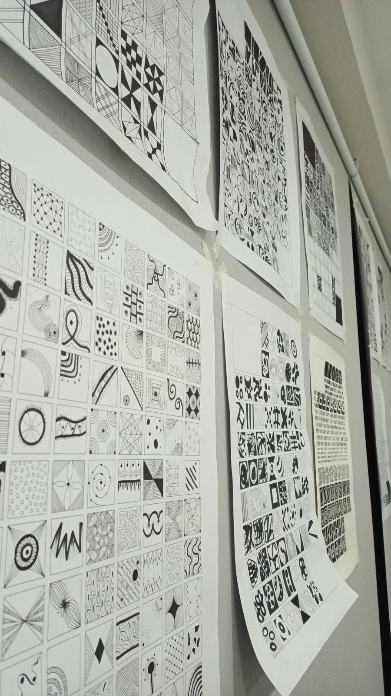
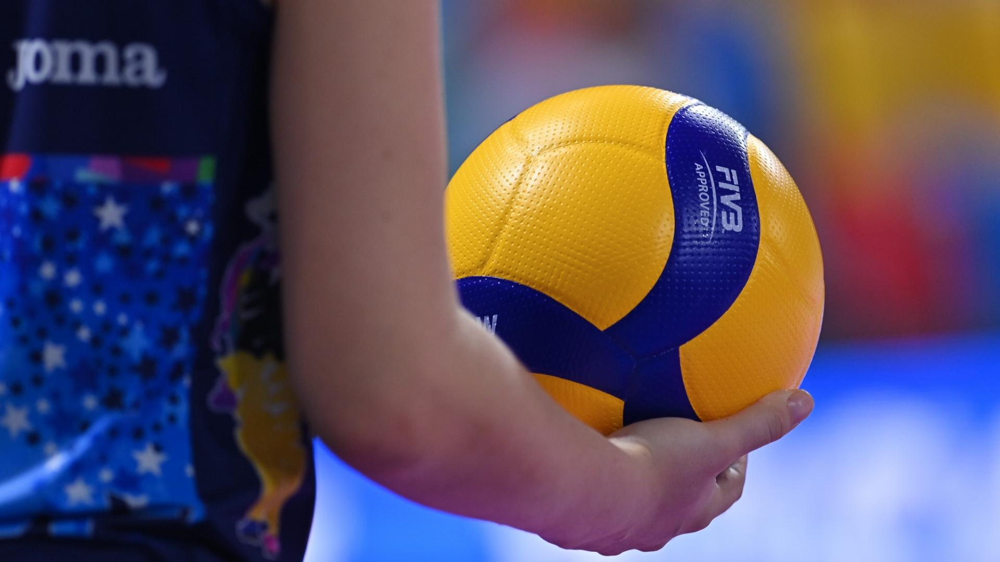
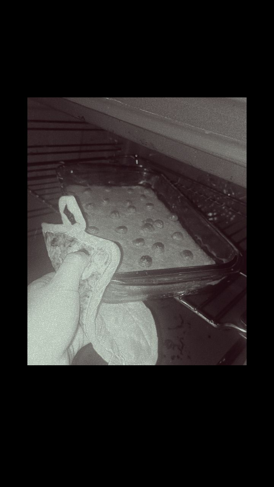
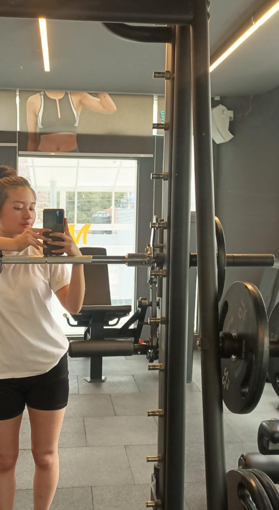
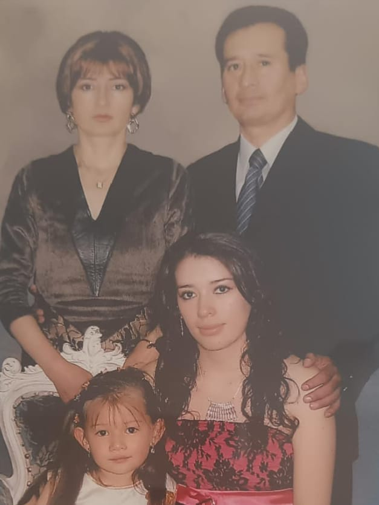
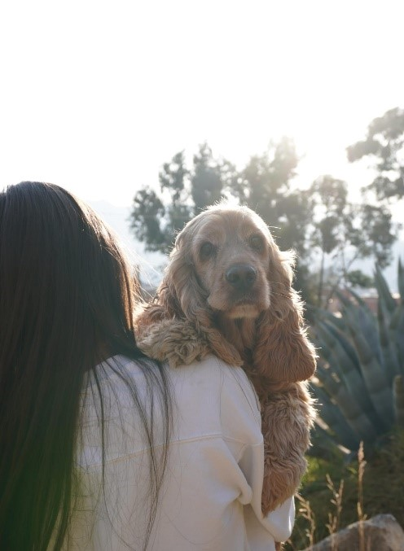
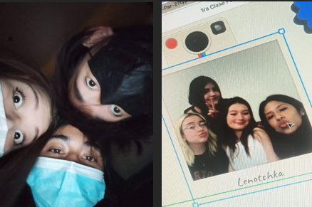
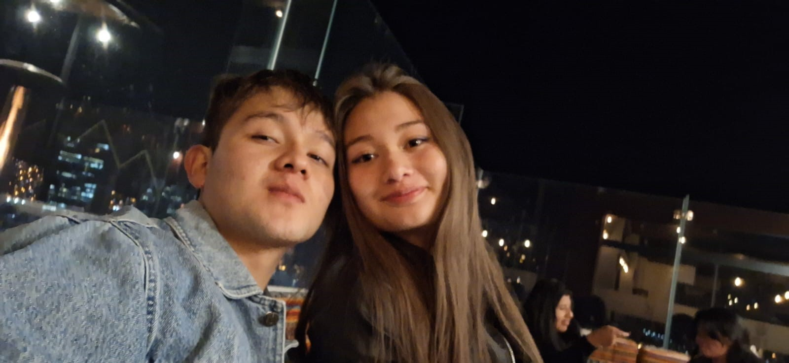

Hola soy Lenotchka, todos me dicen leno, me pusieron ese nombre por la hija de un astronauta
muy famoso que comparte el mismo nombre de mi papá, tengo 20 años, nací y vivo actualmente en La Paz
Bolivia, soy piscis por lo tanto soy una persona sensible, me considero una persona tímida, ansiosa y
explosiva cuando agarro confianza.
Sobre Mí :D
Como datos curiosos diría que puedo mover mis orejas, soy fotofobica por lo que generalmente
tengo que estar usando gafas de sol, de niña era vegetariana. Mi núcleo familiar tiene nombres rusos y
finalmente a mi corta experiencia universitaria decidí cambiarme a la carrera de Diseño Digital,
antiguamente estudiaba Fonoaudiologia.
Gustos musicales
Escucho todo tipo de música pero depende mucho mi humor si estoy feliz movidas como pop,
reggaetón, clásicos de los 80’s, de lo contrario si estoy triste baladas, melancólicas, si hago la
limpieza o simplemente cocino me pongo salsas, cumbias, música de señora como Selena Quintanilla o
Paquita la del barrio y si hago ejercicio rap, rock pesado como Sistema Of A Down.
Entre mis artistas más escuchados según Spotify son Luis Miguel, Eminem, Bad bunny, Rihanna, Sistema Of
A Down, Ke personajes, Bob Marley, Michael Jackson, Myke towers, Drake, Billie eillish, Los enanitos
verdes, entre otros.
HOBBIES
Pintar o dibujar
Cuando me siento muy motivada me gusta pasar el rato dibujando mandalas o hacer alguna
manualidad.

Jugar voleibol
Antiguamente me encontraba en un equipo profesional de vóley pero ahora solo juego algún fin
de
semana amistosamente con amigos.

Reposteria
Me encanta hacer queques, galletas en momentos especiales para mis seres queridos.

Hacer ejercicio
Entreno día por medio en el gym, cual se volvió parte de mi rutina.

Hacer senderismo
Al momento de viajar me encanta acampar por la naturaleza y caminar por senderos por horas.
---- INFORMACION GENERAL ----

Familia
Actualmente vivo con mis 2 padres y mi mascota, soy casi como hija única porque mi hermana se caso
vive
aparte con sus hijos y esposo.

Mascotas
Tengo un Cocker de 10 años se llama Chocolate es super dormilón e inquieto.

Amigos
En la universidad conocí a varias personitas que son muy especiales para mi.
Por otro lado, mis amigos del colegio aun nos mantenemos en contacto debido a que cada uno tomo un
rumbo distinto.

Pareja
Me gusta pasar tiempo con él, su manera en la que actúa y como piensa, me hace ver las cosas de otra
forma más bonita.